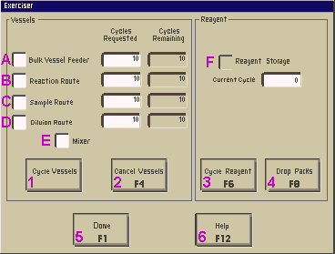

Motion Test
This procedure describes how to perform motion tests on specific components of the instrument.
- Moving to specific locations
- Cycling
- Exercising
Perform these procedures for troubleshooting when:
- A motorized device exhibits errors when moving.
- A device has been repaired or replaced and proper motion verification is necessary.
Most devices in the instrument can be moved independently using one of two motion test functions:
- Move to Position - a one time move from one location to another
- Cycling - repeated moves from one location to another.
Note: For detailed information on the motion tests that are available, refer to the
Tests: Motion Tests Overview document.

Exercise a specific area of the instrument.